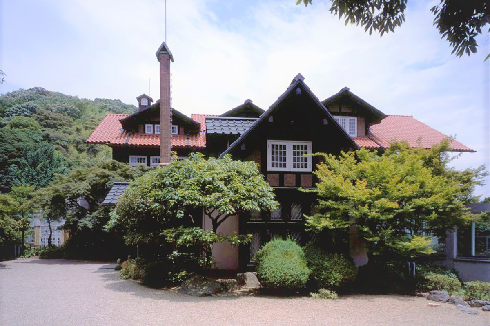
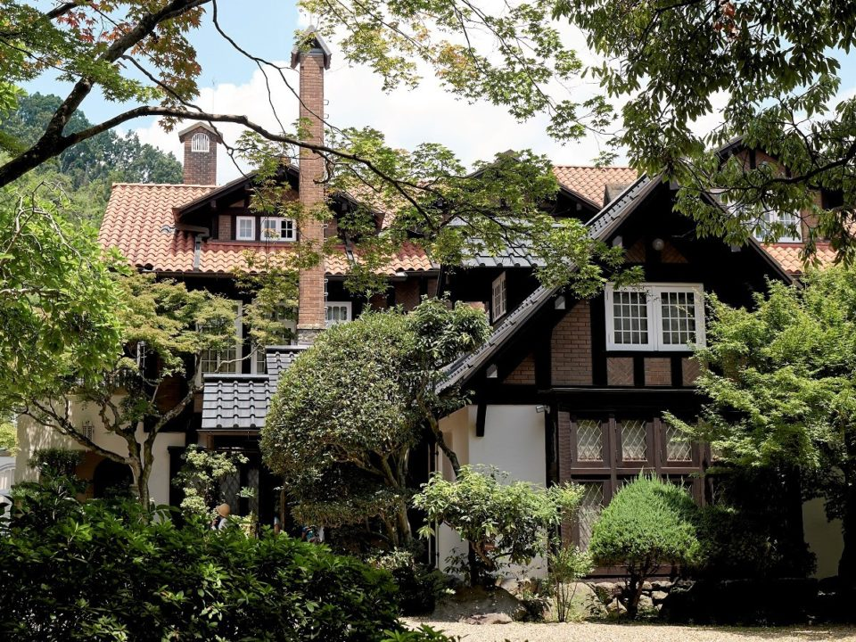
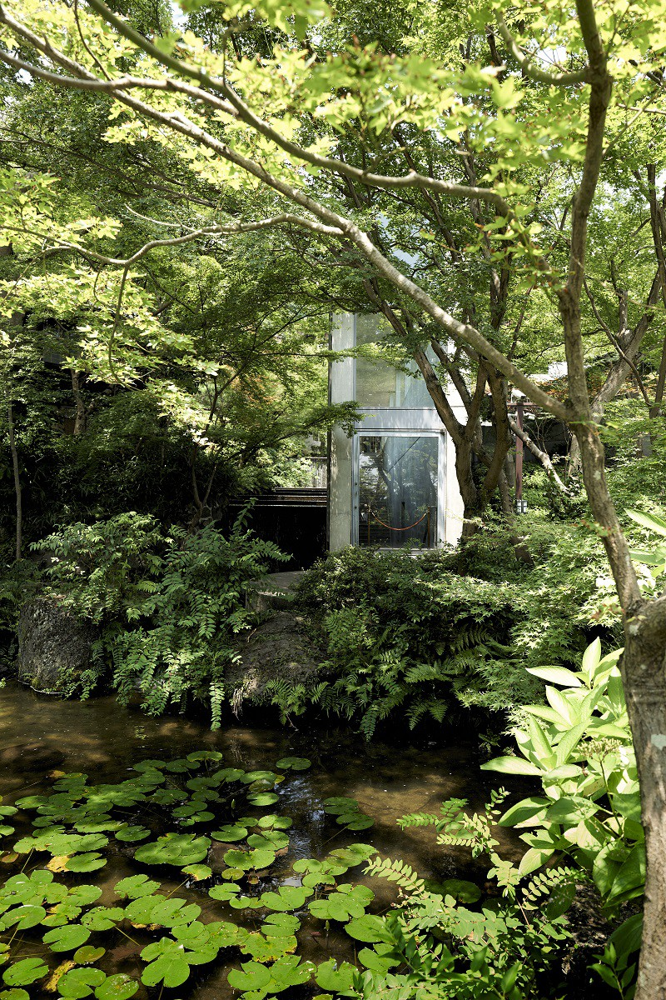
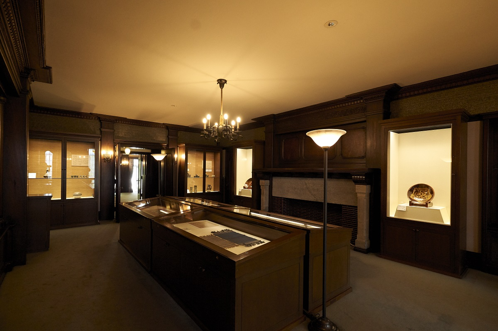
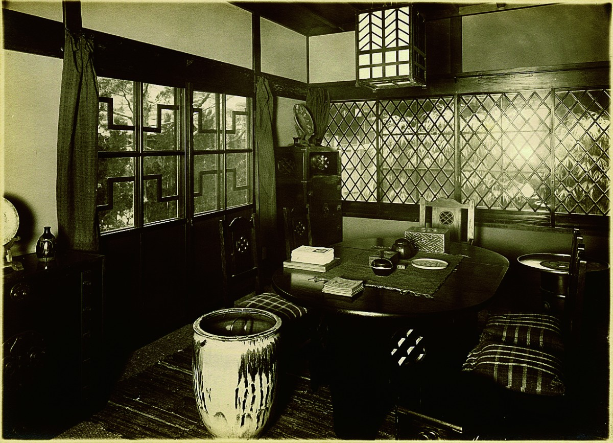
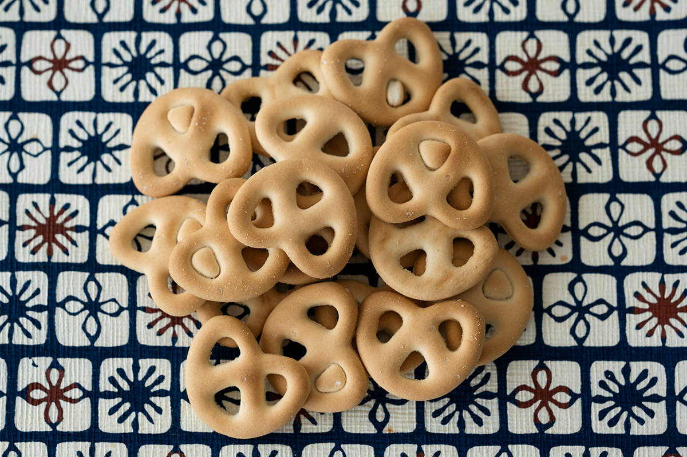
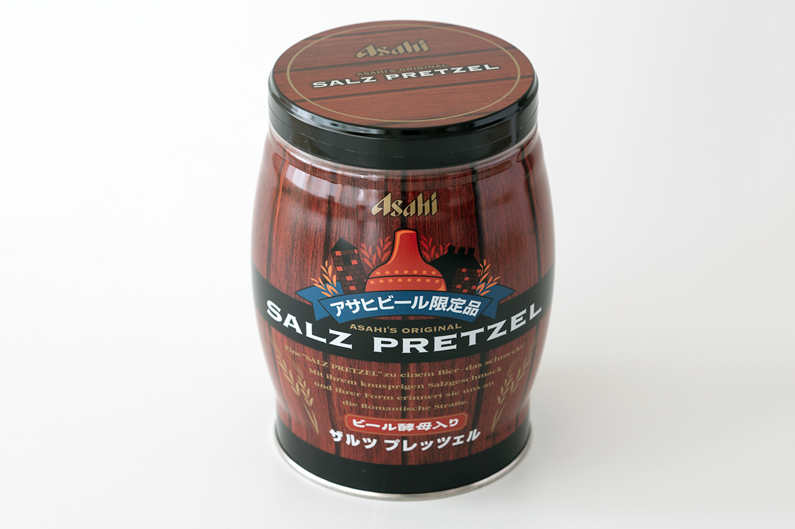

Префектура Киото · Оямадзаки · искусство
Музей на горе Тэннодзан: вилла в английском стиле, коллекция мингэй и брецели к пиву

Недалеко от Киото, на склоне горы Тэннодзан, стоит вилла в духе английской готики. Сегодня в ней музей с одним из лучших в Киото частных собраний мингэй, народного ремесла.
Дорога
Пять станций от Киото
От вокзала Киото поезд линии Токайдо идёт на запад, и пятая остановка уже Ямадзаки. К северу от станции поднимается гора Тэннодзан, а на её склоне стоит Asahi Group Oyamazaki Villa Museum of Art. Музей известен прежде всего собранием мингэй, и сюда стоит ехать из города как на пикник.

Здание построено в основном в стиле английской тюдоровской готики, но с восточными мотивами в отделке, и получилось ни на что не похожим. Вокруг много деревьев, и осенью клёны здесь особенно хороши.
История
Вилла двух друзей виски и пива
Виллу построил для себя предприниматель Сётаро Кага (1888–1954). Он дружил с Масатакой Такэцуру (1894–1979), и когда тот основывал компанию Nikka Whisky, Кага стал её акционером. Перед смертью Кага передал эти акции другому своему другу, Тамэсабуро Ямамото, первому президенту компании Asahi Beer.
В 1967 году вилла перестала принадлежать семье Кага, и её даже предлагали снести. За советом обратились к Asahi Beer, давно связанной с этим домом. Компания вместе с местными властями восстановила виллу и открыла в ней музей, а сердцем собрания сделала коллекцию Тамэсабуро Ямамото.

Коллекция
Друг мастеров мингэй
Движение мингэй началось в 1926 году, когда Мунэёси Янаги (1889–1961), философ и собиратель, опубликовал призыв создать японский музей народного искусства. Движение живёт уже почти сто лет, и во многом благодаря меценатам, которые разделяли идеи Янаги и покупали вещи мастеров. Одним из них был Тамэсабуро Ямамото.
С эпохи Мэйдзи и до эпохи Сёва японские предприниматели сближались друг с другом через чайную церемонию. Их называли «киндай сукися», знатоками нового времени. Ямамото пошёл другим путём и всю жизнь поддерживал мингэй.

Керамика Кандзиро Каваи, Сёдзи Хамады, Кэнкити Томимото, Бернарда Лича и Люси Ри, лаковые вещи Тацуаки Куроды, ткани с трафаретной росписью Кэйсукэ Сэридзавы, гравюры Сико Мунакаты: имена в этой коллекции самые громкие для мингэй. В 2023 году, к 40-летию со дня смерти Тацуаки Куроды, музей показал его работы из собрания Ямамото на отдельной выставке.
Микуни-со
Дом, в котором жили вещи
В 1928 году в Токио в честь восшествия на престол императора Сёва устроили выставку. Мастера мингэй построили для неё дом по собственному проекту, обставили его предметами повседневной жизни и показали как «Мингэй-кан», дом народного ремесла.

Когда выставка закрылась, Ямамото перевёз здание со всей обстановкой к себе в Осаку и по-настоящему пользовался этими вещами. Этот дом считают прообразом будущего Японского музея мингэй, и часть предметов из него сегодня хранится в музее на горе Тэннодзан.
Сувенир
Брецели в бочонке
Раз музей основан пивоварами, в магазине при нём стоит купить «Сальц-брецели» с пивными дрожжами. Это товар, который продают только в компаниях группы Asahi.


Asahi Group Oyamazaki Villa Museum of Art
- Адрес
- префектура Киото, уезд Отокуни, Оямадзаки, Дзэнивара, 5-3
- Телефон
- +81 75-957-3123
- Часы работы
- 10:00–17:00 (вход до 16:30)
- Выходные
- понедельник (если это праздник, то следующий день), новогодние праздники
- Цены / Вход
- взрослые 900 иен, студенты и старшеклассники 500 иен, младше старшей школы бесплатно
- Как добраться
- от станции Ямадзаки линии Токайдо, пятой к западу от вокзала Киото
Фото: Рико Таяма, Вакана Баба, Asahi Group Oyamazaki Villa Museum of Art.